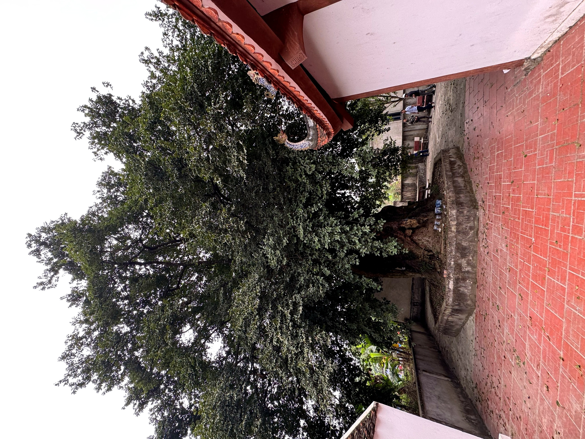
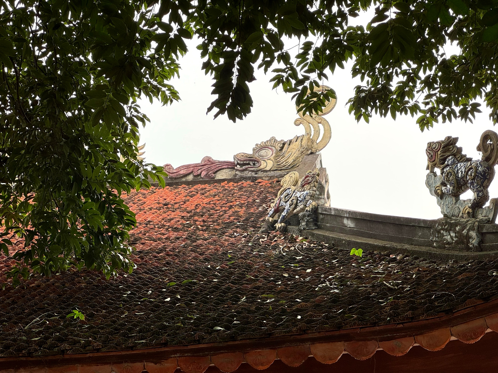

Loại hìnhTypeType
Di tích tâm linhSpiritual Heritage SitesSites de Patrimoine Spirituel

Đền Cây Thợi nằm trong thôn Đồi Dùng, gắn với cây thị cổ thụ hơn 400 năm tuổi — "Cây Thợi" là cách đọc tiếng Mường của từ "cây thị". Điểm đặc biệt của cây là một gốc mang ba loại quả, được người dân địa phương coi là biểu tượng linh thiêng che chở cho cả cộng đồng.
Đền thờ Nhị vị Thánh Mẫu hiệu Từ Quang (bà cả) và Từ Minh (bà hai), gắn với truyền thuyết Đầm Hai Bà: hai Bà xưa kia đắm đò trên đầm, hoá thiêng phù hộ cho nhân dân trong vùng. Ngôi đền được vua Khải Định ban sắc phong năm 1924, khẳng định giá trị tín ngưỡng và lịch sử lâu đời. Hai lễ vọng chính trong năm vào ngày 12/8 và 12/11 Âm lịch là dịp cộng đồng tề tựu, gắn kết tình làng nghĩa xóm.
Đền Cây Thợi, located in thôn Đồi Dùng, is associated with an ancient, over 400-year-old thị tree — "Cây Thợi" is the Mường pronunciation of "cây thị" (persimmon tree). The tree's unique feature is a single trunk bearing three types of fruit, regarded by locals as a sacred symbol protecting the entire community.
The Temple of the Two Holy Mothers, Tu Quang (the elder) and Tu Minh (the younger), is linked to the legend of Dam Hai Ba: two ladies who once drowned in the lagoon, becoming sacred beings protecting the local people. King Khai Dinh bestowed a royal decree upon the temple in 1924, affirming its long-standing spiritual and historical value. The two main annual festivals on the 12th day of the 8th and 11th lunar months are occasions for the community to gather, strengthening village bonds.
Đền Cây Thợi, situé dans thôn Đồi Dùng, est associé à un ancien arbre thị (kaki) de plus de 400 ans — "Cây Thợi" est la prononciation Mường de "cây thị". La particularité de l'arbre est un tronc unique portant trois types de fruits, considéré par les habitants comme un symbole sacré protégeant toute la communauté.
Le Temple des Deux Saintes Mères, Tu Quang (l'aînée) et Tu Minh (la cadette), est lié à la légende de Dam Hai Ba : deux dames qui se sont autrefois noyées dans le lagon, devenant des êtres sacrés protégeant la population locale. Le roi Khai Dinh a décerné un décret royal au temple en 1924, affirmant sa valeur spirituelle et historique séculaire. Les deux principales fêtes annuelles, les 12e jours des 8e et 11e mois lunaires, sont des occasions pour la communauté de se rassembler, renforçant les liens du village.
| Tham quan, chiêm báiVisit and offer prayers.Visite et recueillement. | Dâng hương, tìm hiểu thờ tự Nhị vị Thánh MẫuOffer incense, learn about the worship of the Two Holy Mothers.Offrir de l'encens, découvrir le culte des Deux Saintes Mères. |
| Hướng dẫn tại chỗLocal GuidesGuides Locaux | Kể truyền thuyết Đầm Hai Bà, giới thiệu sắc phong và lịch sử đềnHear the legend of Đầm Hai Bà, and learn about the imperial decrees and history of the temple.Écoutez la légende de Đầm Hai Bà, et découvrez les décrets impériaux et l'histoire du temple. |
| Chụp ảnh cây thị cổPhotograph the Ancient Persimmon TreeImmortalisez l'ancien plaqueminier | Cây hơn 400 năm, một gốc ba loại quả — điểm check-in đặc biệtOver 400-year-old tree, one root, three types of fruit — a unique check-in spot.Arbre de plus de 400 ans, une seule racine, trois types de fruits — un point photo unique. |
| Tham dự lễ vọngAttend vigil ceremonyAssister à la cérémonie de la veillée | Ngày 12/8 và 12/11 Âm lịch (theo lịch cộng đồng)August 12th and November 12th (Lunar calendar, according to community schedule).12 août et 12 novembre (calendrier lunaire, selon le calendrier communautaire). |
| Nghe kể chuyện dân gianListen to captivating folk talesÉcoutez des contes populaires captivants | Truyền thuyết Đầm Hai Bà và tín ngưỡng thờ Mẫu của người MườngThe legend of Dam Hai Ba and the Muong Mother Goddess worship tradition.La légende de Dam Hai Ba et la tradition Muong du culte de la Déesse Mère. |


Đền Cây Thợi hướng tới trở thành điểm tín ngưỡng dân gian Mường Cốc tiêu biểu trong hành trình du lịch cộng đồng. Giai đoạn tới sẽ tập trung sưu tầm và hệ thống hóa các câu chuyện truyền miệng về Đầm Hai Bà, số hoá sắc phong Khải Định 1924, và phát triển hoạt động diễn giải văn hóa gắn với lễ vọng cộng đồng nhằm tạo trải nghiệm có chiều sâu cho du khách. Điểm đến Du lịch cộng đồng Mường Cốc, Xã Mỹ Đức – Thành phố Hà NộiCay Thoi Temple aims to become a prominent Muong Coc folk religious site on the community tourism journey. The next phase will focus on collecting and systematizing oral stories about Dam Hai Ba, digitizing the Khai Dinh 1924 royal decree, and developing cultural interpretation activities linked to community vigils to create a profound experience for visitors. Muong Coc Community-Based Tourism Destination, My Duc Commune – Hanoi City.Le Đền Cây Thợi aspire à devenir un site religieux populaire emblématique de Mường Cốc sur le parcours du tourisme communautaire. La prochaine phase se concentrera sur la collecte et la systématisation des histoires orales sur Đầm Hai Bà, la numérisation du décret royal Khải Định de 1924, et le développement d'activités d'interprétation culturelle liées aux veillées communautaires afin de créer une expérience profonde pour les visiteurs. Destination de Tourisme Communautaire Mường Cốc, Commune de Mỹ Đức – Ville de Hà Nội.